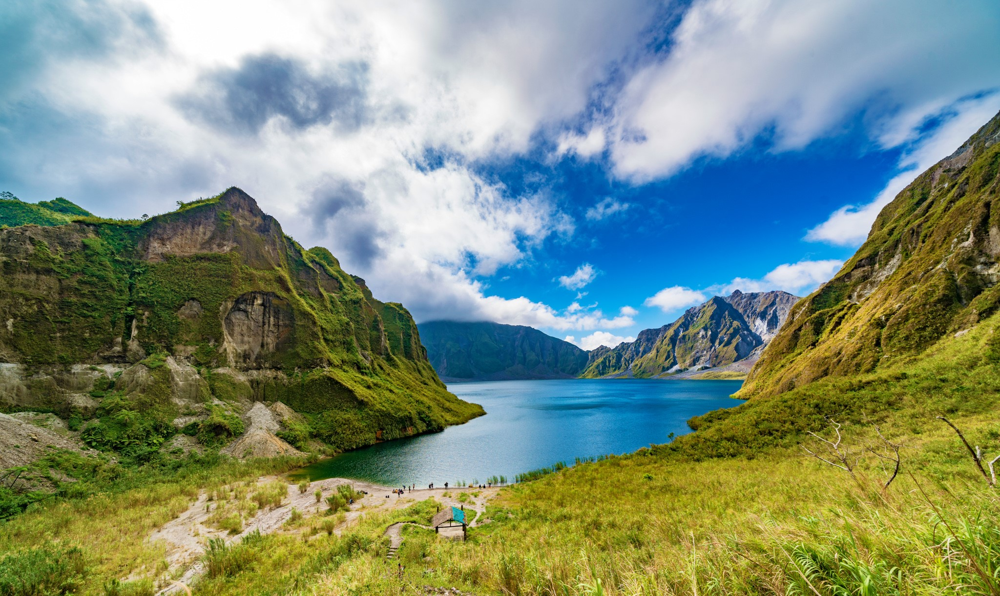
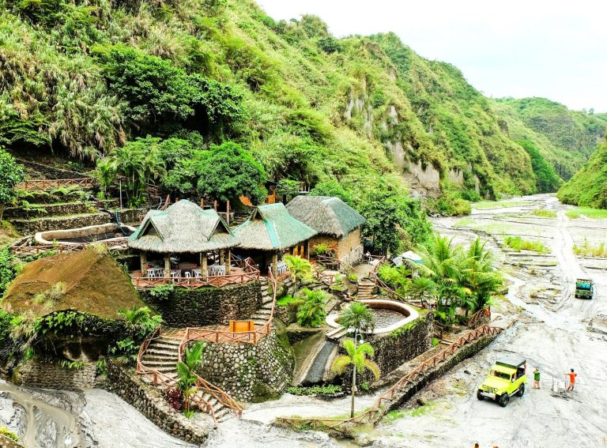
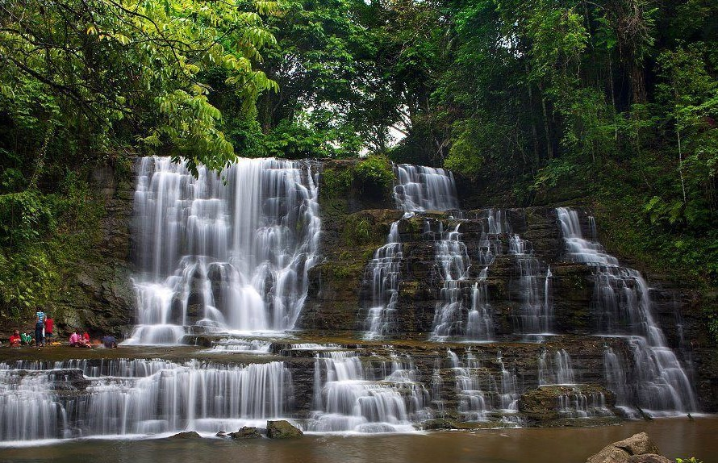
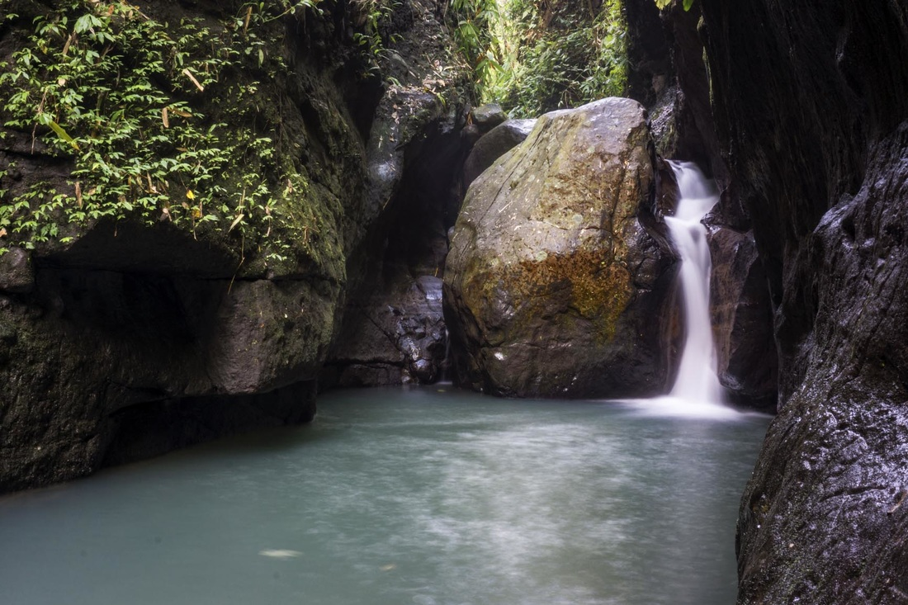

Unveiling the Natural Wonders of Pampanga: Embark on an Enchanting Nature Trip
Pampanga, a hidden jewel in the center of the Philippines, is ready to be found by both nature lovers and adventurers. A pristine haven of natural treasures lies beyond its humming urban centers and thriving cultural scene,
enticing people to immerse themselves in the calm embrace of Mother Nature.
1. Mt. Pinatubo
Mt. Pinatubo, which is located amidst the stunning scenery of the Philippine archipelago, is a mesmerizing example of an ever-changing force of nature. This powerful volcano, which has remained silent and inactive for many years,
once rocked the globe with its devastating eruption in 1991, leaving a path of destruction and an irrevocable mark on history. We are reminded of the delicate balance between environmental protection and human advancement now as
we remember its former wrath. We will discover the Mt. Pinatubo's hidden potential in this persuasive exploration—not just as a place of devastation, but as a beacon of opportunity, urging us to harness its latent energy, safeguard
its delicate ecosystem, and create a more sustainable future that honors both progress and preservation.
2. Puning Hot Spring
Discover the enchanting Puning Hot Spring, a hidden gem nestled in the beautiful Philippine province of Pampanga. This natural sanctuary, which provides a peaceful haven between greenery and volcanic terrains, is known for its geothermal waters,
which offer an enjoyable and healing escape. Puning Hot Spring is an ideal location for wellness seekers and explorers alike, guaranteeing a fascinating experience filled with relaxation and discovery.
3. Miyamit Falls in Porac
Welcome to the fascinating Miyamit Falls in Porac, Pampanga, Philippines, a real beauty of nature. Miyamit Falls, with its cascading streams falling into crystal-clear blue pools, offers a captivating site for both nature lovers and
adventure seekers. Miyamit Falls invites you to immerse yourself in its beauty and bask in the tranquility of this hidden gem in Pampanga and offers a mesmerizing sight and a refreshing escape from the hustle and bustle of city life,
whether you're yearning for an adrenaline-pumping experience or seeking a peaceful respite amidst the serene ambience.
4. Haduan Falls
 Haduan Falls is the destination for you if you wish to hike, traverse a hanging bridge, and climb a wall of stones all in order to enjoy the cold cascade. This waterfall, which can be found in Mabalacat's Sitio Haduan, offers a fun experience
for you and your companions. Haduan Falls gives a beautiful sight and a serene atmosphere that beckons tourists to relax and take in the natural beauty around them. Learn about the magic of Haduan Falls, where time appears to stand still and
the beauties of nature are revealed to you.
5. Candaba Swamps and Wild Ducks and Birds Sanctuary
Greetings from the stunning Candaba Swamps and Wild Ducks and Birds Sanctuary, a haven for both birdwatchers and environment lovers. This vast wetland sanctuary is located in the Philippine province of Pampanga and draws migrating birds on
their seasonal journeys because to its rich biodiversity. The sanctuary offers an exceptional opportunity to watch these bird marvels up close, including graceful wild ducks and a wide variety of colorful and unusual species. An unique and
all-encompassing experience in the heart of Philippine nature is guaranteed when you visit the Candaba Swamps and Wild Ducks and Birds Sanctuary.
So, fellow visitors, now is the time to hear Pampanga's nature's alluring tune.
This region provides a unique experience, whether you seek for excitement, peace,
or the chance to take in the magnificence of nature. Unleash your sense of adventure,
enjoy the great outdoors, and go on a wildlife excursion that will enchant you and make you
want to come back repeatedly. Let Pampanga serve as the setting for your most memorable nature adventure yet.

Beverly Rodriguez
A seasoned and prolific author of the blogosphere, whose expertise spans a wide array of topics. With a keen intellect and a gift for eloquent expression, this author's blog is a treasure trove of thought-provoking insights, well-researched articles, and engaging narratives that captivate readers from all walks of life. Whether exploring the realms of technology, science, literature, or personal growth, their impeccable writing style and dedication to delivering high-quality content make them a trusted and respected voice in the world of blogging.
Star Angeles
Pampanga's nature sounds like a hidden gem waiting to be explored! From lush green landscapes to serene rivers and lakes, the province seems to offer a diverse range of natural beauty. I am particularly intrigued by the idea of discovering the unique flora and fauna that thrive in this region, making it a nature enthusiast's dream destination.
Reply
Mary Grace
Wow, Pampanga's natural wonders sound truly breathtaking! The thought of exploring its picturesque mountains, tranquil waterfalls, and lush rice fields excites me. It seems like a perfect escape from the bustling city life, offering a serene and refreshing environment for relaxation and adventure.
Reply
John Doe
Absolutely! Pampanga's natural beauty is indeed a sight to behold, and it offers a wonderful opportunity to connect with nature and rejuvenate the soul. I'm sure you'll have an unforgettable experience exploring the province's scenic landscapes and immersing yourself in its tranquil surroundings.
Reply
Joe Star
The natural wonders of Pampanga truly sound like a paradise for nature lovers like me. I wish I could visit there soon.
Reply